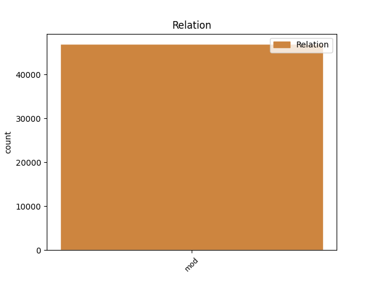
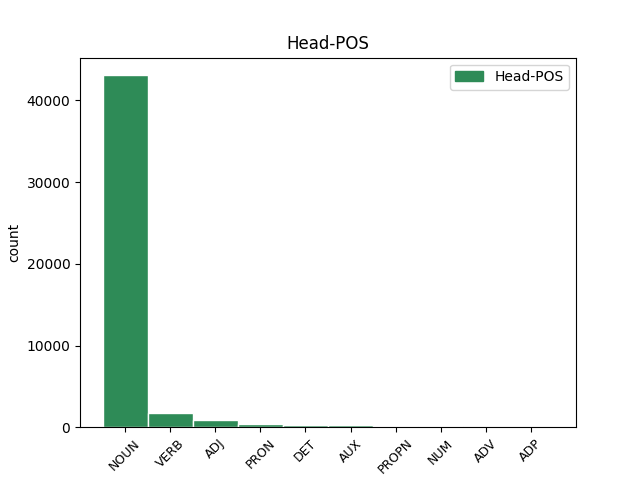
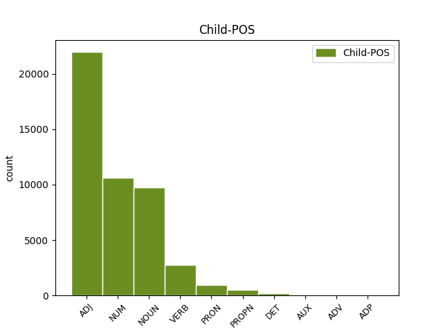

Distribution of features within this leaf



Agreement Rules sorted by frequency.
- When the dependent token is the modifer(mod) of the head token, and the dependent token is ADJ.
1 Hvussu _ _ _ _ 0 _ _ _
2 verður _ _ _ _ 0 _ _ _
3 við _ _ _ _ 0 _ _ _
4 ætlaðu _ _ _ _ 0 _ _ _
5 broytingunum _ _ _ _ 0 _ _ _
6 ber _ _ _ _ 0 _ _ _
7 ikki _ _ _ _ 0 _ _ _
8 til _ _ _ _ 0 _ _ _
9 at _ _ _ _ 0 _ _ _
10 siga _ _ _ _ 0 _ _ _
11 enn _ _ _ _ 0 _ _ _
12 , _ _ _ _ 0 _ _ _
13 tí _ _ _ _ 0 _ _ _
14 nýggi nýggis ADJ _ Case=Nom|Degree=Pos|Gender=Neut|Number=Sing|Strength=Strong 15 mod _ _
15 landsstýrismaðurin landsstýrismaðuri NOUN _ Case=Dat|Gender=Masc|Number=Sing 0 _ _ _
16 hevur _ _ _ _ 0 _ _ _
17 enn _ _ _ _ 0 _ _ _
18 ikki _ _ _ _ 0 _ _ _
19 alment _ _ _ _ 0 _ _ _
20 beinleiðis _ _ _ _ 0 _ _ _
21 nevnt _ _ _ _ 0 _ _ _
22 nakað _ _ _ _ 0 _ _ _
23 um _ _ _ _ 0 _ _ _
24 broytingar _ _ _ _ 0 _ _ _
25 á _ _ _ _ 0 _ _ _
26 økinum _ _ _ _ 0 _ _ _
27 . _ _ _ _ 0 _ _ _
1 Strok _ _ _ _ 0 _ _ _
2 Lærarafelagið _ _ _ _ 0 _ _ _
3 Skúlablaðið _ _ _ _ 0 _ _ _
4 Bókadeildin _ _ _ _ 0 _ _ _
5 Bókaklubbin _ _ _ _ 0 _ _ _
6 Bókamiðsølan _ _ _ _ 0 _ _ _
7 Í _ _ _ _ 0 _ _ _
8 eini _ _ _ _ 0 _ _ _
9 uppgerð _ _ _ _ 0 _ _ _
10 yvir _ _ _ _ 0 _ _ _
11 læntar _ _ _ _ 0 _ _ _
12 bøkur _ _ _ _ 0 _ _ _
13 á _ _ _ _ 0 _ _ _
14 skúlabókasavninum _ _ _ _ 0 _ _ _
15 í _ _ _ _ 0 _ _ _
16 Eysturskúlanum _ _ _ _ 0 _ _ _
17 herfyri _ _ _ _ 0 _ _ _
18 , _ _ _ _ 0 _ _ _
19 vísti _ _ _ _ 0 _ _ _
20 tað _ _ _ _ 0 _ _ _
21 seg _ _ _ _ 0 _ _ _
22 , _ _ _ _ 0 _ _ _
23 at _ _ _ _ 0 _ _ _
24 helmurin _ _ _ _ 0 _ _ _
25 av _ _ _ _ 0 _ _ _
26 bókunum _ _ _ _ 0 _ _ _
27 , _ _ _ _ 0 _ _ _
28 sum _ _ _ _ 0 _ _ _
29 vórðu _ _ _ _ 0 _ _ _
30 læntar _ _ _ _ 0 _ _ _
31 út _ _ _ _ 0 _ _ _
32 ein _ _ _ _ 0 _ _ _
33 dag _ _ _ _ 0 _ _ _
34 , _ _ _ _ 0 _ _ _
35 vóru vóru NOUN _ Case=Acc|Gender=Masc|Number=Sing 36 mod _ _
36 krabbabøkur krabbabøkur NOUN _ Case=Nom|Gender=Fem|Number=Sing 0 _ _ _
37 . _ _ _ _ 0 _ _ _
1 Hóast _ _ _ _ 0 _ _ _
2 at _ _ _ _ 0 _ _ _
3 stovnar _ _ _ _ 0 _ _ _
4 uttan _ _ _ _ 0 _ _ _
5 iva _ _ _ _ 0 _ _ _
6 longu _ _ _ _ 0 _ _ _
7 hava _ _ _ _ 0 _ _ _
8 eina eina NUM _ Case=Acc|Number=Sing|NumType=Card 10 mod _ _
9 tílíka _ _ _ _ 0 _ _ _
10 kunningarskyldu kunningarskyldus NOUN _ Case=Acc|Gender=Fem|Number=Sing 0 _ _ _
11 sambært _ _ _ _ 0 _ _ _
12 fyrisitingarrættinum _ _ _ _ 0 _ _ _
13 , _ _ _ _ 0 _ _ _
14 verður _ _ _ _ 0 _ _ _
15 hendan _ _ _ _ 0 _ _ _
16 ikki _ _ _ _ 0 _ _ _
17 hildin _ _ _ _ 0 _ _ _
18 sum _ _ _ _ 0 _ _ _
19 nú _ _ _ _ 0 _ _ _
20 er _ _ _ _ 0 _ _ _
21 , _ _ _ _ 0 _ _ _
22 og _ _ _ _ 0 _ _ _
23 tað _ _ _ _ 0 _ _ _
24 hevði _ _ _ _ 0 _ _ _
25 tí _ _ _ _ 0 _ _ _
26 verið _ _ _ _ 0 _ _ _
27 ynskiligt _ _ _ _ 0 _ _ _
28 , _ _ _ _ 0 _ _ _
29 at _ _ _ _ 0 _ _ _
30 kunningarskyldan _ _ _ _ 0 _ _ _
31 bleiv _ _ _ _ 0 _ _ _
32 ásett _ _ _ _ 0 _ _ _
33 í _ _ _ _ 0 _ _ _
34 lógini _ _ _ _ 0 _ _ _
35 . _ _ _ _ 0 _ _ _
1 38 _ _ _ _ 0 _ _ _
2 ) _ _ _ _ 0 _ _ _
3 Innaneftirlit _ _ _ _ 0 _ _ _
4 : _ _ _ _ 0 _ _ _
5 Skipað _ _ _ _ 0 _ _ _
6 tiltøk _ _ _ _ 0 _ _ _
7 , _ _ _ _ 0 _ _ _
8 sum _ _ _ _ 0 _ _ _
9 skulu _ _ _ _ 0 _ _ _
10 tryggja _ _ _ _ 0 _ _ _
11 , _ _ _ _ 0 _ _ _
12 at _ _ _ _ 0 _ _ _
13 virksemið _ _ _ _ 0 _ _ _
14 á _ _ _ _ 0 _ _ _
15 alibrúkinum _ _ _ _ 0 _ _ _
16 verður _ _ _ _ 0 _ _ _
17 lagt _ _ _ _ 0 _ _ _
18 til _ _ _ _ 0 _ _ _
19 rættis _ _ _ _ 0 _ _ _
20 , _ _ _ _ 0 _ _ _
21 skipað _ _ _ _ 0 _ _ _
22 , _ _ _ _ 0 _ _ _
23 útint _ _ _ _ 0 _ _ _
24 og _ _ _ _ 0 _ _ _
25 viðlíkahildið _ _ _ _ 0 _ _ _
26 í _ _ _ _ 0 _ _ _
27 samsvari _ _ _ _ 0 _ _ _
28 við _ _ _ _ 0 _ _ _
29 galdandi _ _ _ _ 0 _ _ _
30 lóg _ _ _ _ 0 _ _ _
31 ella _ _ _ _ 0 _ _ _
32 við _ _ _ _ 0 _ _ _
33 krøv _ _ _ _ 0 _ _ _
34 , _ _ _ _ 0 _ _ _
35 heimilað _ _ _ _ 0 _ _ _
36 í _ _ _ _ 0 _ _ _
37 galdandi galda VERB _ Case=Nom|Gender=Fem|Number=Sing|Strength=Weak|Tense=Pres|VerbForm=Part|Voice=Act 38 mod _ _
38 lóg lóg NOUN _ Case=Acc|Gender=Masc|Number=Sing 0 _ _ _
39 . _ _ _ _ 0 _ _ _
1 Hósdagur _ _ _ _ 0 _ _ _
2 , _ _ _ _ 0 _ _ _
3 27 _ _ _ _ 0 _ _ _
4 . _ _ _ _ 0 _ _ _
5 oktober _ _ _ _ 0 _ _ _
6 2011 _ _ _ _ 0 _ _ _
7 20:54 _ _ _ _ 0 _ _ _
8 Jonas _ _ _ _ 0 _ _ _
9 Flindt _ _ _ _ 0 _ _ _
10 Rasmussen _ _ _ _ 0 _ _ _
11 og _ _ _ _ 0 _ _ _
12 B36 _ _ _ _ 0 _ _ _
13 skrivaðu _ _ _ _ 0 _ _ _
14 leygardagin _ _ _ _ 0 _ _ _
15 undir _ _ _ _ 0 _ _ _
16 nýggjan _ _ _ _ 0 _ _ _
17 sáttmála _ _ _ _ 0 _ _ _
18 fyri _ _ _ _ 0 _ _ _
19 komandi _ _ _ _ 0 _ _ _
20 kappingarár _ _ _ _ 0 _ _ _
21 Eingin _ _ _ _ 0 _ _ _
22 ivi _ _ _ _ 0 _ _ _
23 er _ _ _ _ 0 _ _ _
24 um _ _ _ _ 0 _ _ _
25 , _ _ _ _ 0 _ _ _
26 at _ _ _ _ 0 _ _ _
27 Jonas _ _ _ _ 0 _ _ _
28 hevur _ _ _ _ 0 _ _ _
29 átt átt NUM _ Case=Acc|Gender=Neut|Number=Sing 0 _ _ _
30 sín sín PRON _ Case=Acc|Degree=Pos|Gender=Neut|Number=Sing|Strength=Strong 29 mod _ _
31 stóra _ _ _ _ 0 _ _ _
32 leiklut _ _ _ _ 0 _ _ _
33 í _ _ _ _ 0 _ _ _
34 góðu _ _ _ _ 0 _ _ _
35 avrikunum _ _ _ _ 0 _ _ _
36 hjá _ _ _ _ 0 _ _ _
37 okkara _ _ _ _ 0 _ _ _
38 monnum _ _ _ _ 0 _ _ _
39 í _ _ _ _ 0 _ _ _
40 ár _ _ _ _ 0 _ _ _
41 . _ _ _ _ 0 _ _ _
1 Ja _ _ _ _ 0 _ _ _
2 , _ _ _ _ 0 _ _ _
3 tú _ _ _ _ 0 _ _ _
4 ert _ _ _ _ 0 _ _ _
5 til _ _ _ _ 0 _ _ _
6 fyri _ _ _ _ 0 _ _ _
7 at _ _ _ _ 0 _ _ _
8 tú _ _ _ _ 0 _ _ _
9 skalt _ _ _ _ 0 _ _ _
10 taka _ _ _ _ 0 _ _ _
11 ímóti _ _ _ _ 0 _ _ _
12 Guds Gud PROPN _ Case=Gen|Gender=Masc|Number=Sing 13 mod _ _
13 gávu gávus NOUN _ Case=Acc|Gender=Fem|Number=Sing 0 _ _ _
14 , _ _ _ _ 0 _ _ _
15 uttan _ _ _ _ 0 _ _ _
16 nakrantíð _ _ _ _ 0 _ _ _
17 at _ _ _ _ 0 _ _ _
18 skula _ _ _ _ 0 _ _ _
19 gjalda _ _ _ _ 0 _ _ _
20 fyri _ _ _ _ 0 _ _ _
21 hana _ _ _ _ 0 _ _ _
22 , _ _ _ _ 0 _ _ _
23 hava _ _ _ _ 0 _ _ _
24 barnakor _ _ _ _ 0 _ _ _
25 hjá _ _ _ _ 0 _ _ _
26 Gudi _ _ _ _ 0 _ _ _
27 , _ _ _ _ 0 _ _ _
28 sum _ _ _ _ 0 _ _ _
29 skrivað _ _ _ _ 0 _ _ _
30 stendur _ _ _ _ 0 _ _ _
31 í _ _ _ _ 0 _ _ _
32 bíbliu _ _ _ _ 0 _ _ _
33 okkara _ _ _ _ 0 _ _ _
34 . _ _ _ _ 0 _ _ _
1 Avgerð _ _ _ _ 0 _ _ _
2 um _ _ _ _ 0 _ _ _
3 at _ _ _ _ 0 _ _ _
4 taka _ _ _ _ 0 _ _ _
5 HSF _ _ _ _ 0 _ _ _
6 av _ _ _ _ 0 _ _ _
7 krevur _ _ _ _ 0 _ _ _
8 meiriluta _ _ _ _ 0 _ _ _
9 upp _ _ _ _ 0 _ _ _
10 á _ _ _ _ 0 _ _ _
11 2/3 _ _ _ _ 0 _ _ _
12 av _ _ _ _ 0 _ _ _
13 øllum _ _ _ _ 0 _ _ _
14 limum _ _ _ _ 0 _ _ _
15 í _ _ _ _ 0 _ _ _
16 HSF _ _ _ _ 0 _ _ _
17 , _ _ _ _ 0 _ _ _
18 og _ _ _ _ 0 _ _ _
19 avgerð _ _ _ _ 0 _ _ _
20 skal _ _ _ _ 0 _ _ _
21 takast _ _ _ _ 0 _ _ _
22 á _ _ _ _ 0 _ _ _
23 einum eins DET _ Case=Dat|Gender=Masc,Neut|Number=Sing 24 mod _ _
24 aðalfundi aðalfundi NOUN _ Definite=Ind|Gender=Neut|Number=Sing 0 _ _ _
25 , _ _ _ _ 0 _ _ _
26 ið _ _ _ _ 0 _ _ _
27 er _ _ _ _ 0 _ _ _
28 serliga _ _ _ _ 0 _ _ _
29 innkallaður _ _ _ _ 0 _ _ _
30 til _ _ _ _ 0 _ _ _
31 endamálið _ _ _ _ 0 _ _ _
32 . _ _ _ _ 0 _ _ _
1 Hetta _ _ _ _ 0 _ _ _
2 er vere AUX _ Mood=Ind|Number=Sing|Person=3|Tense=Pres|VerbForm=Fin|Voice=Act 3 mod _ _
3 tó tó NOUN _ Case=Nom|Number=Sing|NumType=Card 0 _ _ _
4 ikki _ _ _ _ 0 _ _ _
5 galdandi _ _ _ _ 0 _ _ _
6 í _ _ _ _ 0 _ _ _
7 sambandi _ _ _ _ 0 _ _ _
8 við _ _ _ _ 0 _ _ _
9 brævatkvøðu _ _ _ _ 0 _ _ _
10 . _ _ _ _ 0 _ _ _
1 Her _ _ _ _ 0 _ _ _
2 kannaðu kannað VERB _ Mood=Opt|Number=Sing|Person=1|Tense=Pres|VerbForm=Fin|Voice=Act 0 _ _ _
3 vit vit ADV _ Definite=Ind|Degree=Pos|Gender=Neut|Number=Sing 2 mod _ _
4 , _ _ _ _ 0 _ _ _
5 um _ _ _ _ 0 _ _ _
6 HERV _ _ _ _ 0 _ _ _
7 - _ _ _ _ 0 _ _ _
8 K _ _ _ _ 0 _ _ _
9 ( _ _ _ _ 0 _ _ _
10 Human _ _ _ _ 0 _ _ _
11 endogenous _ _ _ _ 0 _ _ _
12 retrovirus _ _ _ _ 0 _ _ _
13 family _ _ _ _ 0 _ _ _
14 K _ _ _ _ 0 _ _ _
15 ) _ _ _ _ 0 _ _ _
16 hevur _ _ _ _ 0 _ _ _
17 nakran _ _ _ _ 0 _ _ _
18 lut _ _ _ _ 0 _ _ _
19 í _ _ _ _ 0 _ _ _
20 sjúkuni _ _ _ _ 0 _ _ _
21 gikt _ _ _ _ 0 _ _ _
22 – _ _ _ _ 0 _ _ _
23 antin _ _ _ _ 0 _ _ _
24 sum _ _ _ _ 0 _ _ _
25 grundin _ _ _ _ 0 _ _ _
26 til _ _ _ _ 0 _ _ _
27 sjúkuna _ _ _ _ 0 _ _ _
28 ella _ _ _ _ 0 _ _ _
29 um _ _ _ _ 0 _ _ _
30 gikt _ _ _ _ 0 _ _ _
31 er _ _ _ _ 0 _ _ _
32 grundin _ _ _ _ 0 _ _ _
33 til _ _ _ _ 0 _ _ _
34 , _ _ _ _ 0 _ _ _
35 at _ _ _ _ 0 _ _ _
36 HERV _ _ _ _ 0 _ _ _
37 - _ _ _ _ 0 _ _ _
38 K _ _ _ _ 0 _ _ _
39 verður _ _ _ _ 0 _ _ _
40 sett _ _ _ _ 0 _ _ _
41 í _ _ _ _ 0 _ _ _
42 gongd _ _ _ _ 0 _ _ _
43 , _ _ _ _ 0 _ _ _
44 tá _ _ _ _ 0 _ _ _
45 ein _ _ _ _ 0 _ _ _
46 fær _ _ _ _ 0 _ _ _
47 sjúkuna _ _ _ _ 0 _ _ _
48 . _ _ _ _ 0 _ _ _
1 Eisini _ _ _ _ 0 _ _ _
2 ætla _ _ _ _ 0 _ _ _
3 teir _ _ _ _ 0 _ _ _
4 at _ _ _ _ 0 _ _ _
5 leika _ _ _ _ 0 _ _ _
6 ein _ _ _ _ 0 _ _ _
7 venjingardyst _ _ _ _ 0 _ _ _
8 antin antin ADP _ Gender=Masc|Number=Sing|NumType=Card 9 mod _ _
9 dagin dagin NOUN _ Definite=Ind|Gender=Masc|Number=Sing 0 _ _ _
10 fyri _ _ _ _ 0 _ _ _
11 ella _ _ _ _ 0 _ _ _
12 2 _ _ _ _ 0 _ _ _
13 dagar _ _ _ _ 0 _ _ _
14 fyri _ _ _ _ 0 _ _ _
15 finaluna _ _ _ _ 0 _ _ _
16 . _ _ _ _ 0 _ _ _
Disagree Examples:
1 Fri _ _ _ _ 0 _ _ _
2 , _ _ _ _ 0 _ _ _
3 28 _ _ _ _ 0 _ _ _
4 Nov _ _ _ _ 0 _ _ _
5 2014 _ _ _ _ 0 _ _ _
6 14:06:26 _ _ _ _ 0 _ _ _
7 GMT _ _ _ _ 0 _ _ _
8 av _ _ _ _ 0 _ _ _
9 Vagn _ _ _ _ 0 _ _ _
10 , _ _ _ _ 0 _ _ _
11 68922 _ _ _ _ 0 _ _ _
12 ferðir _ _ _ _ 0 _ _ _
13 sætt _ _ _ _ 0 _ _ _
14 Fríggjadagin _ _ _ _ 0 _ _ _
15 28 28 ADJ _ Number=Plur 17 mod _ _
16 . _ _ _ _ 0 _ _ _
17 november november NOUN _ Definite=Ind|Gender=Masc|Number=Sing 0 _ _ _
18 prýddu _ _ _ _ 0 _ _ _
19 næmingarnir _ _ _ _ 0 _ _ _
20 stovurnar _ _ _ _ 0 _ _ _
21 til _ _ _ _ 0 _ _ _
22 jóla _ _ _ _ 0 _ _ _
23 . _ _ _ _ 0 _ _ _
1 Á _ _ _ _ 0 _ _ _
2 tingfundinum tingfundins NOUN _ Case=Dat|Gender=Masc|Number=Plur 3 mod _ _
3 mikudagin mikudagi NOUN _ Case=Dat|Gender=Masc|Number=Sing 0 _ _ _
4 fer _ _ _ _ 0 _ _ _
5 Helgi _ _ _ _ 0 _ _ _
6 Abrahamsen _ _ _ _ 0 _ _ _
7 , _ _ _ _ 0 _ _ _
8 løgtingsmaður _ _ _ _ 0 _ _ _
9 , _ _ _ _ 0 _ _ _
10 at _ _ _ _ 0 _ _ _
11 seta _ _ _ _ 0 _ _ _
12 Johan _ _ _ _ 0 _ _ _
13 Dahl _ _ _ _ 0 _ _ _
14 , _ _ _ _ 0 _ _ _
15 landsstýrismanni _ _ _ _ 0 _ _ _
16 , _ _ _ _ 0 _ _ _
17 ein _ _ _ _ 0 _ _ _
18 munnligan _ _ _ _ 0 _ _ _
19 fyrispurning _ _ _ _ 0 _ _ _
20 um _ _ _ _ 0 _ _ _
21 kappingarførið _ _ _ _ 0 _ _ _
22 í _ _ _ _ 0 _ _ _
23 handverkaravinnuni _ _ _ _ 0 _ _ _
24 . _ _ _ _ 0 _ _ _
1 Fyristøðufólkini _ _ _ _ 0 _ _ _
2 áttu _ _ _ _ 0 _ _ _
3 eina _ _ _ _ 0 _ _ _
4 fimm fimm NUM _ Number=Plur|NumType=Card 5 mod _ _
5 ára ár NOUN _ Case=Gen|Number=Sing 0 _ _ _
6 gamla _ _ _ _ 0 _ _ _
7 dóttur _ _ _ _ 0 _ _ _
8 , _ _ _ _ 0 _ _ _
9 sum _ _ _ _ 0 _ _ _
10 vaknaði _ _ _ _ 0 _ _ _
11 av _ _ _ _ 0 _ _ _
12 bønunum _ _ _ _ 0 _ _ _
13 og _ _ _ _ 0 _ _ _
14 av _ _ _ _ 0 _ _ _
15 grátinum _ _ _ _ 0 _ _ _
16 . _ _ _ _ 0 _ _ _
1 Fyristøðufólkini _ _ _ _ 0 _ _ _
2 áttu _ _ _ _ 0 _ _ _
3 eina _ _ _ _ 0 _ _ _
4 fimm _ _ _ _ 0 _ _ _
5 ára ár NOUN _ Case=Gen|Number=Sing 7 mod _ _
6 gamla _ _ _ _ 0 _ _ _
7 dóttur dótt NOUN _ Case=Gen|Gender=Masc|Number=Plur 0 _ _ _
8 , _ _ _ _ 0 _ _ _
9 sum _ _ _ _ 0 _ _ _
10 vaknaði _ _ _ _ 0 _ _ _
11 av _ _ _ _ 0 _ _ _
12 bønunum _ _ _ _ 0 _ _ _
13 og _ _ _ _ 0 _ _ _
14 av _ _ _ _ 0 _ _ _
15 grátinum _ _ _ _ 0 _ _ _
16 . _ _ _ _ 0 _ _ _
1 Stk _ _ _ _ 0 _ _ _
2 . _ _ _ _ 0 _ _ _
3 4 _ _ _ _ 0 _ _ _
4 . _ _ _ _ 0 _ _ _
5 Fyri _ _ _ _ 0 _ _ _
6 at _ _ _ _ 0 _ _ _
7 verða _ _ _ _ 0 _ _ _
8 settur _ _ _ _ 0 _ _ _
9 í _ _ _ _ 0 _ _ _
10 fast _ _ _ _ 0 _ _ _
11 starv _ _ _ _ 0 _ _ _
12 sum _ _ _ _ 0 _ _ _
13 lærari _ _ _ _ 0 _ _ _
14 í _ _ _ _ 0 _ _ _
15 teimum _ _ _ _ 0 _ _ _
16 gymnasialu gymnasialus NOUN _ Case=Dat|Gender=Masc|Number=Sing 0 _ _ _
17 miðnámsútbúgvingunum miðnámsútbúgvingunum NOUN _ Case=Dat|Gender=Masc|Number=Plur 16 mod _ _
18 skal _ _ _ _ 0 _ _ _
19 viðkomandi _ _ _ _ 0 _ _ _
20 hava _ _ _ _ 0 _ _ _
21 staðið _ _ _ _ 0 _ _ _
22 námsfrøðiliga _ _ _ _ 0 _ _ _
23 útbúgving _ _ _ _ 0 _ _ _
24 í _ _ _ _ 0 _ _ _
25 seinasta _ _ _ _ 0 _ _ _
26 lagi _ _ _ _ 0 _ _ _
27 2 _ _ _ _ 0 _ _ _
28 ár _ _ _ _ 0 _ _ _
29 frá _ _ _ _ 0 _ _ _
30 setanardegnum _ _ _ _ 0 _ _ _
31 . _ _ _ _ 0 _ _ _